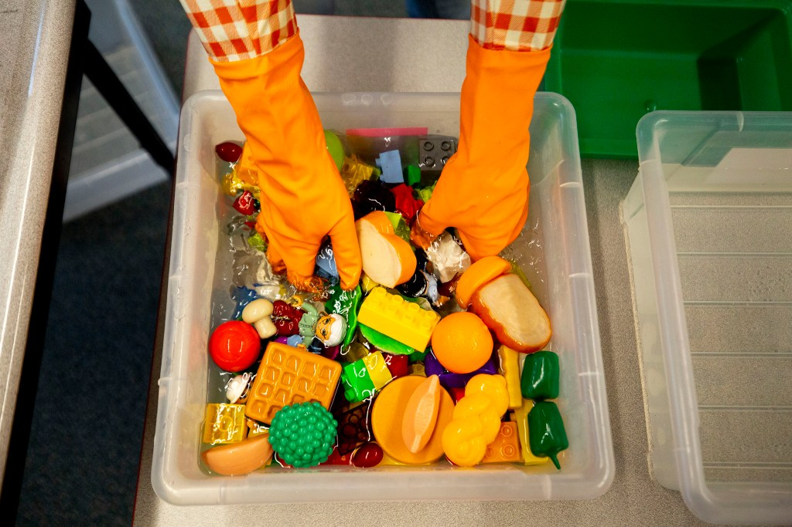
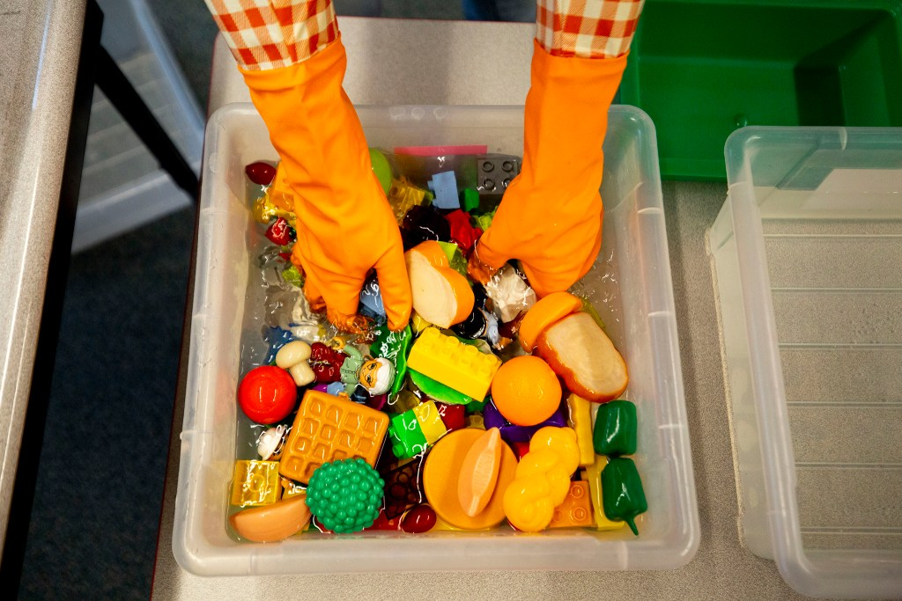

School-Aged Child Care (SACC)
About
Welcome to Chippewa Valley Schools (CVS), School Age Child Care (S.A.C.C.) Program! Our mission is to provide a safe and friendly supervised environment, encouraging children to enhance their social/emotional, physical, and cognitive development through a wide range of age-appropriate activities. Children will be provided with the opportunity to participate in activities that are both self and staff-directed or initiated.
Childcare Goals
The School Age Child Care Program strives to provide the following:
- A safe, healthy environment where staff strive to meet the emotional, social, and physical needs of the children.
- A nurturing environment for all children.
- Respect for self and others, while responsibilities and social skills are both enhanced and encouraged.
- A safe place for children to socialize with peers.
- Planned and supervised activities before and after school, including arts and crafts, science, and math activities.
- Indoor and outdoor physical activities that provide children the opportunity to play and work as a team, while getting exercise.
We are pleased to be part of your family’s childcare experience and look forward to a wonderful school year!


 
